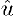
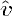
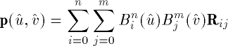
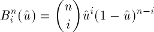
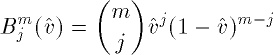
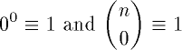
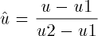
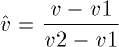

![[Front]](images/OpenGL3.gif)
![[Reference]](../buttons/ReferenceOff.gif)
![[Imp. Guide]](../buttons/ImpGuideOff.gif)
![[Index]](../buttons/IndexOff.gif) glMap2d, glMap2f: define a two-dimensional evaluator.
glMap2d, glMap2f: define a two-dimensional evaluator.
C Specification |
Parameters |
Description |
Notes |
Errors |
Associated Gets |
See Also
void glMap2d(
GLenum target,
GLdouble u1,
GLdouble u2,
GLint ustride,
GLint uorder,
GLdouble v1,
GLdouble v2,
GLint vstride,
GLint vorder,
const GLdouble *points)
void glMap2f(
GLenum target,
GLfloat u1,
GLfloat u2,
GLint ustride,
GLint uorder,
GLfloat v1,
GLfloat v2,
GLint vstride,
GLint vorder,
const GLfloat *points)
- target
- Specifies the kind of values that are generated by the evaluator.
Symbolic constants GL_MAP2_VERTEX_3,
GL_MAP2_VERTEX_4, GL_MAP2_INDEX,
GL_MAP2_COLOR_4, GL_MAP2_NORMAL,
GL_MAP2_TEXTURE_COORD_1,
GL_MAP2_TEXTURE_COORD_2,
GL_MAP2_TEXTURE_COORD_3, and
GL_MAP2_TEXTURE_COORD_4 are accepted.
- u1, u2
- Specify a linear mapping of u, as presented to
glEvalCoord2, to , one of
the two variables that are evaluated by the equations specified by this
command. Initially, u1 is 0 and u2 is 1.
- ustride
- Specifies the number of floats or doubles between the beginning of control
point Rij and the beginning of control point
R(i+1)j, where i and j are
the u and v control point indices, respectively. This
allows control points to be embedded in arbitrary data structures. The
only constraint is that the values for a particular control point must
occupy contiguous memory locations. The initial value of
ustride is 0.
- uorder
- Specifies the dimension of the control point array in the u axis.
Must be positive. The initial value is 1.
- v1, v2
- Specify a linear mapping of v, as presented to
glEvalCoord2, to , one of
the two variables that are evaluated by the equations specified by this
command. Initially, v1 is 0 and v2 is 1.
- vstride
- Specifies the number of floats or doubles between the beginning of control
point Rij and the beginning of control point
Ri(j+1), where i and j are
the u and v control point indices, respectively. This
allows control points to be embedded in arbitrary data structures. The
only constraint is that the values for a particular control point must
occupy contiguous memory locations. The initial value of
vstride is 0.
- vorder
- Specifies the dimension of the control point array in the v axis.
Must be positive. The initial value is 1.
- points
- Specifies a pointer to the array of control points.
Evaluators provide a way to use polynomial or rational polynomial mapping to
produce vertices, normals, texture coordinates, and colors. The values
produced by an evaluator are sent on to further stages of GL processing just
as if they had been presented using glVertex, glNormal, glTexCoord, and glColor commands, except that the generated
values do not update the current normal, texture coordinates, or color.
All polynomial or rational polynomial splines of any degree (up to the maximum
degree supported by the GL implementation) can be described using evaluators.
These include almost all surfaces used in computer graphics, including
B-spline surfaces, NURBS surfaces, Bezier surfaces, and so on.
Evaluators define surfaces based on bivariate Bernstein polynomials. Define
p(, ) as

where Rij is a control point,
Bin() is the
ith Bernstein polynomial of degree n
(uorder = n + 1)

and Bjm() is
the jth Bernstein polynomial of degree m
(vorder = m + 1)

Recall that

glMap2 is used to define the basis and to specify what kind of
values are produced. Once defined, a map can be enabled and disabled by
calling glEnable and glDisable with the map name, one of the nine
predefined values for target, described below. When glEvalCoord2 presents values
u and v, the bivariate Bernstein
polynomials are evaluated using and , where


target is a symbolic constant that indicates what kind of
control points are provided in points, and what output is
generated when the map is evaluated. It can assume one of nine predefined
values:
- GL_MAP2_VERTEX_3
- Each control point is three floating-point values representing
x, y, and z. Internal glVertex3 commands are generated when
the map is evaluated.
- GL_MAP2_VERTEX_4
- Each control point is four floating-point values representing
x, y, z, and w. Internal glVertex4 commands are generated when
the map is evaluated.
- GL_MAP2_INDEX
- Each control point is a single floating-point value representing a color
index. Internal glIndex commands are
generated when the map is evaluated but the current index is not updated
with the value of these glIndex
commands.
- GL_MAP2_COLOR_4
- Each control point is four floating-point values representing red, green,
blue, and alpha. Internal glColor4
commands are generated when the map is evaluated but the current color is
not updated with the value of these glColor4 commands.
- GL_MAP2_NORMAL
- Each control point is three floating-point values representing the
x, y, and z components of a normal vector. Internal
glNormal commands are generated when
the map is evaluated but the current normal is not updated with the value
of these glNormal commands.
- GL_MAP2_TEXTURE_COORD_1
- Each control point is a single floating-point value representing the
s texture coordinate. Internal glTexCoord1 commands are generated
when the map is evaluated but the current texture coordinates are not
updated with the value of these glTexCoord commands.
- GL_MAP2_TEXTURE_COORD_2
- Each control point is two floating-point values representing the
s and t texture coordinates. Internal glTexCoord2 commands are generated
when the map is evaluated but the current texture coordinates are not
updated with the value of these glTexCoord commands.
- GL_MAP2_TEXTURE_COORD_3
- Each control point is three floating-point values representing the
s, t, and r texture coordinates. Internal glTexCoord3 commands are generated
when the map is evaluated but the current texture coordinates are not
updated with the value of these glTexCoord commands.
- GL_MAP2_TEXTURE_COORD_4
- Each control point is four floating-point values representing the
s, t, r, and q texture coordinates. Internal
glTexCoord4 commands are generated
when the map is evaluated but the current texture coordinates are not
updated with the value of these glTexCoord commands.
ustride, uorder, vstride,
vorder, and points define the array addressing
for accessing the control points. points is the location of
the first control point, which occupies one, two, three, or four contiguous
memory locations, depending on which map is being defined. There are
uorder vorder control points in the
array. ustride specifies how many float or double locations
are skipped to advance the internal memory pointer from control point
Rij to control point
R(i+1)j. vstride specifies how
many float or double locations are skipped to advance the internal memory
pointer from control point Rij to control point
Ri(j+1).
As is the case with all GL commands that accept pointers to data,
it is as if the contents of points were copied by glMap2 before glMap2
returns.
Changes to the contents of points have no effect after glMap2 is called.
vorder control points in the
array. ustride specifies how many float or double locations
are skipped to advance the internal memory pointer from control point
Rij to control point
R(i+1)j. vstride specifies how
many float or double locations are skipped to advance the internal memory
pointer from control point Rij to control point
Ri(j+1).
As is the case with all GL commands that accept pointers to data,
it is as if the contents of points were copied by glMap2 before glMap2
returns.
Changes to the contents of points have no effect after glMap2 is called.
Initially, GL_AUTO_NORMAL is enabled. If GL_AUTO_NORMAL is enabled,
normal vectors are generated when either
GL_MAP2_VERTEX_3 or GL_MAP2_VERTEX_4 is used to generate
vertices.
- GL_INVALID_ENUM is generated if target is
not an accepted value.
- GL_INVALID_VALUE is generated if u1 is
equal to u2, or if v1 is equal to
v2.
- GL_INVALID_VALUE is generated if either
ustride or vstride is less than the number
of values in a control point.
- GL_INVALID_VALUE is generated if either
uorder or vorder is less than 1 or greater
than the return value of GL_MAX_EVAL_ORDER.
- GL_INVALID_OPERATION is generated if glMap2 is executed between the execution
of glBegin and the corresponding
execution of glEnd.
glGetMap
glGet with argument
GL_MAX_EVAL_ORDER
glIsEnabled with argument
GL_MAP2_VERTEX_3
glIsEnabled with argument
GL_MAP2_VERTEX_4
glIsEnabled with argument
GL_MAP2_INDEX
glIsEnabled with argument
GL_MAP2_COLOR_4
glIsEnabled with argument
GL_MAP2_NORMAL
glIsEnabled with argument
GL_MAP2_TEXTURE_COORD_1
glIsEnabled with argument
GL_MAP2_TEXTURE_COORD_2
glIsEnabled with argument
GL_MAP2_TEXTURE_COORD_3
glIsEnabled with argument
GL_MAP2_TEXTURE_COORD_4
glBegin,
glColor,
glEnable,
glEvalCoord,
glEvalMesh,
glEvalPoint,
glMap1,
glMapGrid,
glNormal,
glTexCoord,
glVertex
![[Prev]](buttons/ArrowLeftOff.gif)
![[Next]](buttons/ArrowRightOff.gif)
![[Up]](buttons/ArrowUpOff.gif) C Specification
C Specification